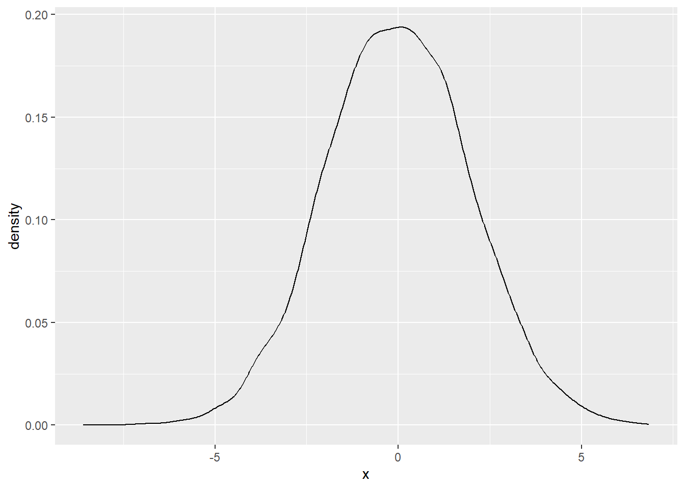
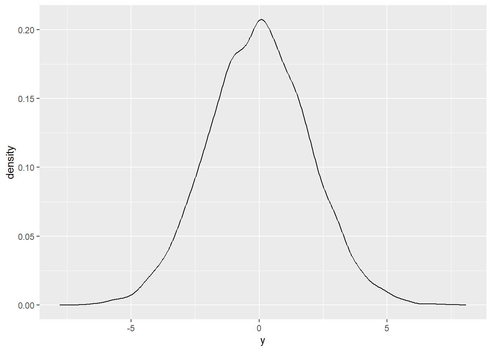
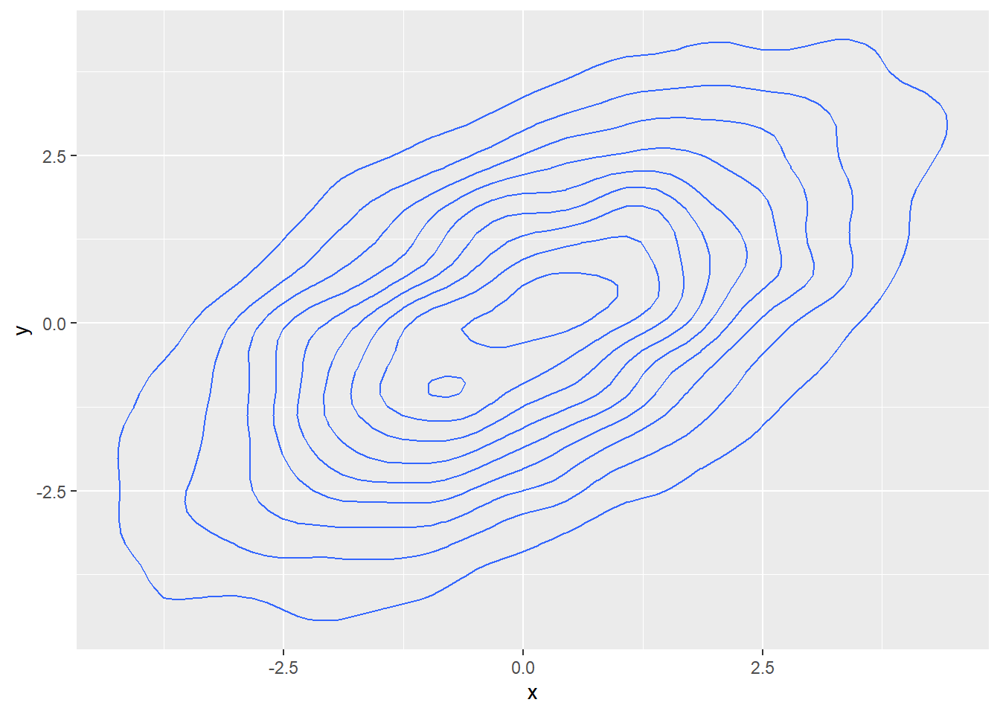
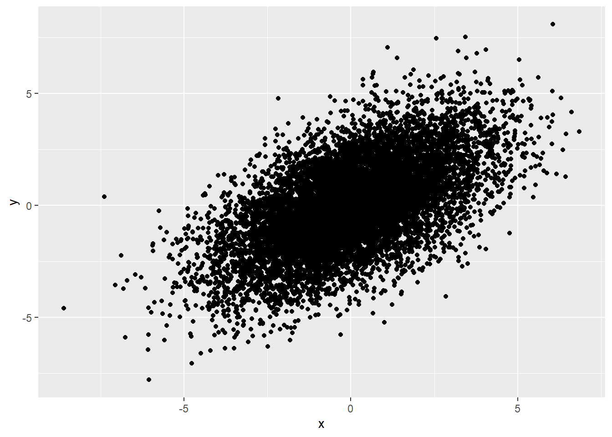

# Pacotes utilizados ao longo do script
library(tidyverse)
library(knitr)
library(MASS)Fichamento Expositivo - Estimação (capítulo 7)
Livro: Galdino, Manoel. Estimação (capítulo 7). In: _______. Introdução à Regressão para Ciências Sociais
Capítulo 7 - Estimação
Nota: Este capítulo tem muitas fórmulas, mas não sei como reproduzi-las aqui no no Quarto.
O preditor linear ótimo com um único regressor possui:
– Intercepto α = E[Y] - β * E[X]
– Inclinação β = cov(Y, X) / var(X)
O que isso significa?
Se “considerarmos o modelo de regressão \(y~i~ = α + β * x~i~ + e~i~\) e usarmos essas fórmulas para calcular os valores de α e β em uma população, obteríamos uma reta ajustada que é o melhor preditor linear”.
Conforme lidamos com uma amostra como se fosse uma popualção, para facilitar as demonstrações, foi deixado de lado como funciona “a estimação de uma regressão a partir de uma amostra”. Mas isso será visto agora.
7.1 Plug-in estimators
“Se tivermos uma amostra, e não a população, é razoável pensar que uma boa estimativa para os valores populacionais de α e β são justamente essas fórmulas, calculadas para os dados amostrais”.
Plug-in estimates é o nome dado ao estimador dos parÂmetros populacionais.
É comum usar as letras gragas com “chapéu” para representar estimativas amostrais de valores populacionais ou letras latinhas $ b $.
7.2 Simulação de uma Normal Bivariada
Nota: A partir desse ponto, vou tilizar o R somente para reproduzir os scripts. Talvez eu deixe de utilizar o Quarto.
Definindo os parâmetros da Normal Bivariada
# Vetor de médias
vetor_media <- c(0,0) # mesmo que as médias sejam iguais, é preciso representá-las em vetores
# Definindo sigma (letra grega para o desvio padrão/variância)
sigma_x <- 2
sigma_y <- 2
rho <- .6
# Criando a matriz (segundo parâmetro)
matriz_var_cov <- matrix(
# Valores para o segundo parâmetro (sigma grande) da Normal Bivariada
c(sigma_x^2, rho*sigma_x*sigma_y, rho*sigma_x*sigma_y, sigma_y^2 ),
# Começa prencheendo as linhas ao invés das colunas
byrow=T,
# Define o número de linhas da matriz
nrow=2
)
# Cria a matriz e apresenta numa tabela
matriz_var_cov |>
knitr::kable()| 4.0 | 2.4 |
| 2.4 | 4.0 |
Vamos, agora, fazer a simulação.
# Definindo semente
set.seed(345)
# Normal bivariada
norm_bivariada <- MASS::mvrnorm(n = 10000,
# Primeiro parâmetro
mu = vetor_media,
# Segundo parâmetro
Sigma = matriz_var_cov)
# Transformando em uma tabela
bivariada_tibble1 <- as_tibble(norm_bivariada,
.name_repair = "universal") |>
# Renomeando as colunas
rename(x = '...1',
y = '...2')Plotando a variável X em um gráfico de densidade
# Plotando em um gráfico de densidade
bivariada_tibble1 |>
ggplot() +
aes(x) +
geom_density()
Plotando a variável Y
# Plotando em um gráfico de densidade
bivariada_tibble1 |>
ggplot() +
aes(y) +
geom_density()
Visualizando X e Y em um gráfico 2D
# Plotando em um gráfico de densidade 2D
bivariada_tibble1 |>
ggplot() +
aes(x, y) +
geom_density2d()
Visualizando X e Y em um gráfico de pontos
# Plotando em um gráfico de pontos
bivariada_tibble1 |>
ggplot() +
aes(x, y) +
geom_point()
Fazendo o modelo regressão
# Criando objeto que guarda o modelo
reg1 <- lm( # lm (linear model)
y ~x, # Variáveis dependentes e independentes
data = bivariada_tibble1)
summary(reg1) # Mais para frente do curso, vamos aprender a interpretar os resultados
Call:
lm(formula = y ~ x, data = bivariada_tibble1)
Residuals:
Min 1Q Median 3Q Max
-5.7942 -1.0639 -0.0067 1.0740 6.4187
Coefficients:
Estimate Std. Error t value Pr(>|t|)
(Intercept) -0.014913 0.015907 -0.937 0.349
x 0.588264 0.008073 72.870 <2e-16 ***
---
Signif. codes: 0 '***' 0.001 '**' 0.01 '*' 0.05 '.' 0.1 ' ' 1
Residual standard error: 1.591 on 9998 degrees of freedom
Multiple R-squared: 0.3469, Adjusted R-squared: 0.3468
F-statistic: 5310 on 1 and 9998 DF, p-value: < 2.2e-16Construindo outros modelos
Em seguida, no livro, o autor cria outros modelos com valores diferentes para os parâmetros e plota as representações gráficas. Aqui, vou só reproduzir os modelos e apresentar a tabela comparando os resultados entre eles.
Modelo 2
# vetor de médias
vetor_media <- c(0,0)
# cov menor, dp o mesmo
sigma_x <- 2
sigma_y <- 2
rho <- .3
# Criando a matriz (segundo parâmetro)
matriz_var_cov <- matrix(c(sigma_x^2, rho*sigma_x*sigma_y, rho*sigma_x*sigma_y, sigma_y^2 ), byrow=T, nrow=2)
# Normal bivariada
norm_bivariada <- MASS::mvrnorm(n = 10000,
# Primeiro parâmetro
mu = vetor_media,
# Segundo parâmetro
Sigma = matriz_var_cov)
# Transformando em uma tabela
bivariada_tibble2 <- as_tibble(norm_bivariada, .name_repair = "universal") %>%
# Renomeando as colunas
rename(x = '...1',
y = '...2')New names:
• `` -> `...1`
• `` -> `...2`# Criando o modelo 2
reg2 <- lm( y ~x , data = bivariada_tibble2)Modelo 3
# cov igual, dp de x maior
sigma_x <- 4
rho <- .3
# Criando matriz
matriz_var_cov <- matrix(
c(sigma_x^2, rho*sigma_x*sigma_y, rho*sigma_x*sigma_y, sigma_y^2 ),
byrow=T,
nrow=2)
# Normal Bivariada
norm_bivariada <- MASS::mvrnorm(n = 10000, mu = vetor_media, Sigma = matriz_var_cov)
# Transformando em uma tabela
bivariada_tibble3 <- as_tibble(norm_bivariada, .name_repair = "universal") %>%
rename(x = '...1',
y = '...2')New names:
• `` -> `...1`
• `` -> `...2`# Criando o modelo 3
reg3 <- lm( y ~x , data = bivariada_tibble3)Modelo 4
# cov maor, dp de x maior
sigma_x <- 4
sigma_y <- 2
rho <- .15
# Criando matriz
matriz_var_cov <- matrix(
c(sigma_x^2, rho*sigma_x*sigma_y, rho*sigma_x*sigma_y, sigma_y^2 ),
byrow=T,
nrow=2)
# Normal bivariada
norm_bivariada <- MASS::mvrnorm(n = 10000, mu = vetor_media, Sigma = matriz_var_cov)
# Transformando em uma tabela
bivariada_tibble4 <- as_tibble(norm_bivariada, .name_repair = "universal") %>%
rename(x = '...1',
y = '...2')New names:
• `` -> `...1`
• `` -> `...2`# Criando o modelo 4
reg4 <- lm( y ~x , data = bivariada_tibble4)Tabela para comparação dos resultados
stargazer::stargazer(list(reg1, reg2, reg3, reg4),
title = "Regressão linear",
omit.stat = "f",
column.labels = c("cov = 2.4, s_x = 2", "cov = 1.2, s_x = 2", "cov = 2.4, s_x = 4", "cov = 1.2, s_x = 4")
)
% Table created by stargazer v.5.2.3 by Marek Hlavac, Social Policy Institute. E-mail: marek.hlavac at gmail.com
% Date and time: sáb, out 14, 2023 - 18:50:30
\begin{table}[!htbp] \centering
\caption{Regressão linear}
\label{}
\begin{tabular}{@{\extracolsep{5pt}}lcccc}
\\[-1.8ex]\hline
\hline \\[-1.8ex]
& \multicolumn{4}{c}{\textit{Dependent variable:}} \\
\cline{2-5}
\\[-1.8ex] & \multicolumn{4}{c}{y} \\
& cov = 2.4, s_x = 2 & cov = 1.2, s_x = 2 & cov = 2.4, s_x = 4 & cov = 1.2, s_x = 4 \\
\\[-1.8ex] & (1) & (2) & (3) & (4)\\
\hline \\[-1.8ex]
x & 0.588$^{***}$ & 0.308$^{***}$ & 0.146$^{***}$ & 0.075$^{***}$ \\
& (0.008) & (0.009) & (0.005) & (0.005) \\
& & & & \\
Constant & $-$0.015 & 0.030 & 0.001 & 0.00002 \\
& (0.016) & (0.019) & (0.019) & (0.020) \\
& & & & \\
\hline \\[-1.8ex]
Observations & 10,000 & 10,000 & 10,000 & 10,000 \\
R$^{2}$ & 0.347 & 0.098 & 0.088 & 0.022 \\
Adjusted R$^{2}$ & 0.347 & 0.098 & 0.088 & 0.022 \\
Residual Std. Error (df = 9998) & 1.591 & 1.884 & 1.881 & 1.998 \\
\hline
\hline \\[-1.8ex]
\textit{Note:} & \multicolumn{4}{r}{$^{*}$p$<$0.1; $^{**}$p$<$0.05; $^{***}$p$<$0.01} \\
\end{tabular}
\end{table}